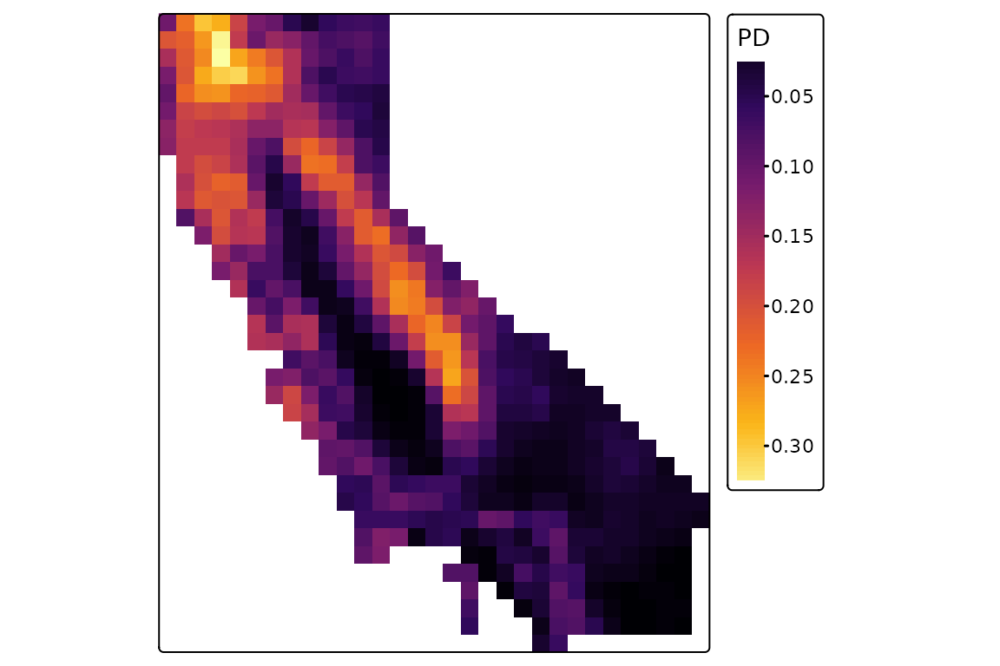
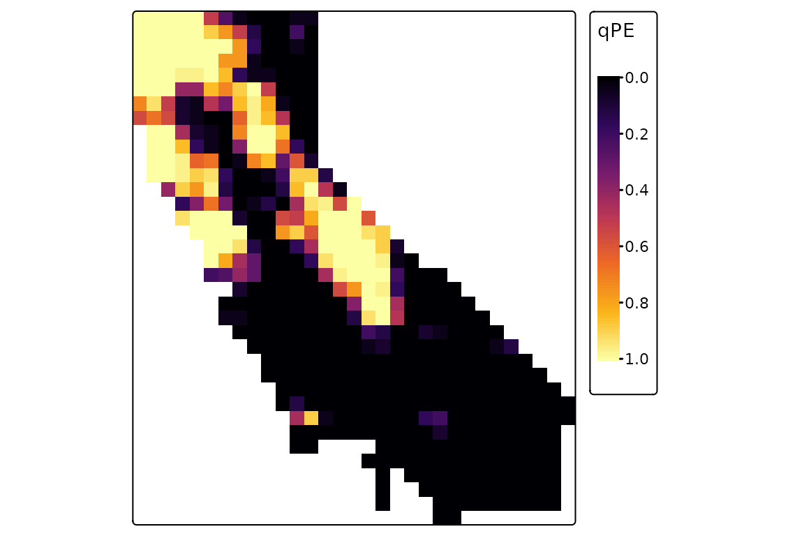
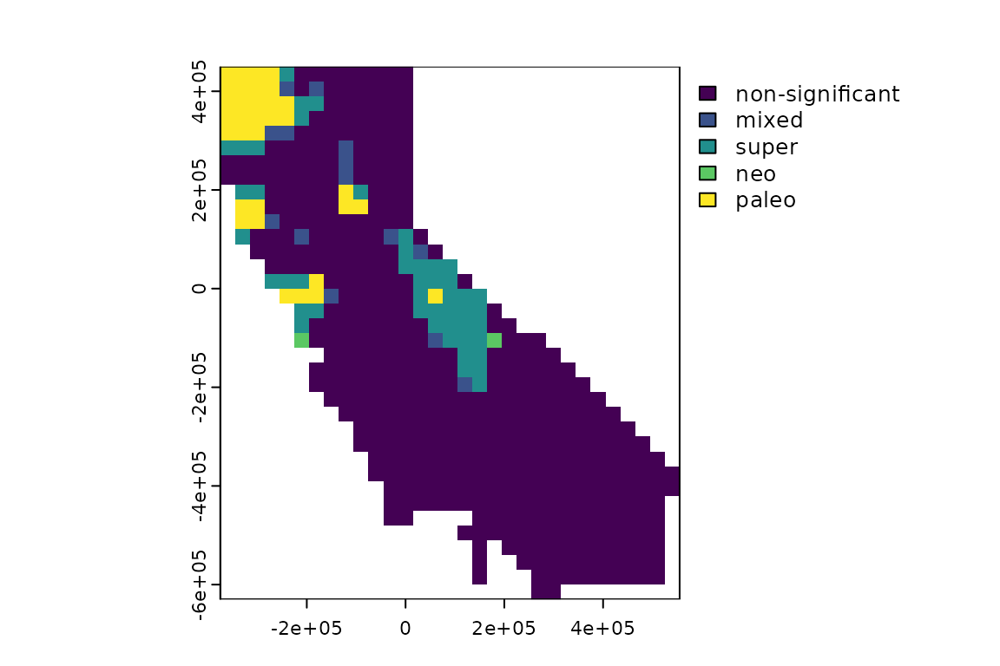

Alpha phylogenetic diversity
alpha-diversity.RmdThis vignette covers topics related to alpha diversity and endemism, including calculation of basic diversity metrics as well as statistical significance testing using null randomization.
To get started, let’s load the phylospatial library, as
well as tmap for visualization. Note that the functions
covered here all require a phylospatial object as input;
see vignette("phylospatial-data") for details on
constructing data sets. We’ll use the moss() example data
here.
library(phylospatial); library(tmap)
ps <- moss()Diversity measures
The ps_diversity() function calculates the following
alpha diversity measures:
- TR: Terminal richness, i.e. richness of terminal taxa (in many cases these are species). For binary data this is the total number of terminals in a site, while for quantitative data it is the sum of probability or abundance values.
- TE: Terminal endemism, i.e. total endemism-weighted diversity of terminal taxa (a.k.a. “weighted endemism”)
- CR: Clade richness, i.e. richness of taxa at all levels (equivalent to PD on a cladogram)
- CE: Clade endemism, i.e. total endemism-weighted diversity of taxa at all levels (equivalent to PE on a cladrogram)
- PD: Phylogenetic diversity
- PE: Phylogenetic endemism, i.e. endemism-weighted PD
- RPD: Relative phylogenetic diversity, i.e. branch length of mean resident (equivalent to PD / CR)
- RPE: Relative phylogenetic endemism, i.e. mean endemism-weighted branch length (equivalent to PE / CE)
- ShPD: Shannon’s pylogenetic diversity, a.k.a “phylogenetic entropy”
- ShPE: Shannon’s pylogenetic diversity, weighted by endemism
- SiPD: Simpson’s phylogenetic diversity
- SiPE: Simpson’s phylogenetic diversity, weighted by endemism
All measures use quantitative community data if provided. “Endemism”
the inverse of the total occurrence mass (the sum of presence,
probability, or abundance values) across all sites in the analysis. See
?ps_diversity for equations giving the derivation of each
metric.
Let’s compute the full set of metrics for our phylospatial data set.
Since our data is raster-based, by default the function will return a
SpatRaster with a layer for each measure. Here we’ll make
plots of PD and PE:
div <- ps_diversity(ps, metric = "all")
tm_shape(div$PD) +
tm_raster(palette = "inferno", style = "cont") +
tm_layout(legend.outside = TRUE)
tm_shape(div$PE) +
tm_raster(palette = "inferno", style = "cont") +
tm_layout(legend.outside = TRUE)
Null model randomization
We can also use randomization to calculate the statistical
significance of these diversity metrics under a null model, using the
ps_rand() function. By default, this function uses
quantize(), a stratified randomization scheme designed for
use with continuous occurrence data, in combination with the
"curveball" algorithm.
Let’s run 25 randomizations (far more would be necessary for a real analysis) for all metrics, and plot the results for PE. This is a quantile value that gives the proportion of randomizations in which observed PE was greater than randomized PE in a given grid cell. (If you wanted to identify “statistically significant” grid cells in a one-tailed test with alpha = 0.05, these would be cells with values greater than 0.95.)
rand <- ps_rand(ps, n_rand = 25, progress = FALSE)
tm_shape(rand$qPE) +
tm_raster(palette = "inferno", style = "cont") +
tm_layout(legend.outside = TRUE)
There are numerous alternative options for randomization algorithms
to use, depending on the type of occurrence data you have (probability,
binary, or abundance) and depending on which attributes of the terminal
community matrix (fill, row and column sums, etc.) you want to hold
fixed. For example, here’s a randomization with an abundance data set,
using the "abuswap_c" algorithm provided by
vegan::nullmodel:
ps2 <- ps_simulate(data_type = "abundance")
rand2 <- ps_rand(ps2, fun = "nullmodel", method = "abuswap_c", progress = FALSE)CANAPE
Many things can be done with randomization results like the ones we
generated above. One thing you can do is use them to classify
significant endemism hotspots in a “categorical analysis of neo- and
paleo-endemism” (CANAPE, Mishler et al. 2014). The
function ps_canape() uses significance values for PE, RPE,
and CE, which are returned by ps_rand(), to categorize
sites into five endemism cateogories. Here’s an example with the moss
data; in this case, only three of the five categories occur in the
result (no areas of significant neo- or mixed-endemism are present):
